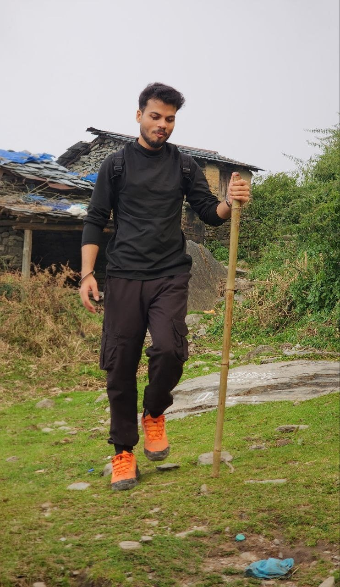
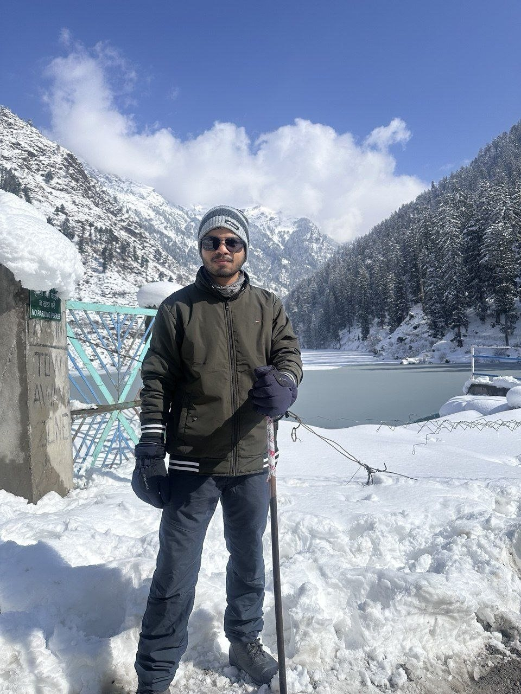

Personal
A few of the things that fill my time outside research.
-

Triund trek -

Kasol in fresh snow!


Reading
Classical literature and philosophy.
- Authors
-
- Fyodor Dostoevsky (above all, Notes from Underground)
- George Orwell
- Victor Hugo
- Franz Kafka
- Jane Austen
- Munshi Premchand
- Leo Tolstoy
- Immanuel Kant
- Poets
-
- William Shakespeare
- Shivmangal Singh Suman
- Ramdhari Singh Dinkar
Cinema & Television
Character-driven stories and classic television.
- Favourites
-
- The Wire
- 12 Angry Men
- The Godfather
- My Left Foot
- Shutter Island
- Classic Indian serials
-
- Byomkesh Bakshi
- Malgudi Days
- Trishna
- Srikanth
- Office Office
- Flop Show
Music & Audio
An eclectic ear, from Beethoven to Punjabi folk.
- Western classical
-
- Rachmaninoff
- Beethoven
- Rock, metal & indie
-
- Pink Floyd
- Led Zeppelin
- Ghazal, Sufi & Punjabi folk
-
- NFAK
- Mehdi Hassan
- Ghulam Ali
- Jagjit Singh
- Kuldeep Manak
- Asa Singh Mastana
- Surinder Kaur
- Audio stories
- Yaadon Ka Idiot Box, narrated by Neelesh Misra
Sports & Games
Watching, playing, and occasionally tinkering.
- Following
- Football: Bayern Munich, the Bundesliga and Serie A · cricket · UFC
- Playing
-
- Chess on Lichess
- Table tennis
- FIFA
- Counter-Strike 1.6
Leisure & Lifestyle
Everything else.
- Active
-
- Swimming
- The gym
- Food
-
- Cooking a main course on weekends
- Exploring Delhi’s street food
- Appreciating
-
- Formal attire
- Watches
- Perfumes
- Reading up on
- Personal finance and equity allocation